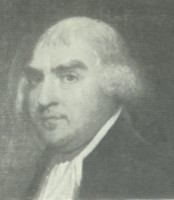

by
Stefan Bielinski
Leonard Gansevoort was born in July 1751. He was the son of Albany mainstays Harman and Magdalena Douw Gansevoort. He learned the elements of business and trade growing up in his father's house across from the Albany Market. By the early 1770s, he also began to practice law.
He married Hester Cuyler in 1770. Over the next two decades, their children were baptized in the Albany Dutch church where he was a church officer and regular baptism sponsor.
Elected to the city council while still living in his father's third ward home, by the outbreak of the war, he had moved his family to a more spacious home on lower State Street where they would live for the next two decades.
A committed revolutionary, he served on the Albany Committee of Correspondence, was elected to the Provincial Congress - where he served as president in 1777, was appointed Albany County clerk in 1778, and served for many years in both houses of the New York State Legislature.
As he grew in wealth and stature, Gansevoort invested in real estate within and beyond Albany. During that time, his State Street home was an Albany landmark.
In 1789, he purchased the farm called Whitehall from the son of General Philip Schuyler. Following the fire of 1793, he moved out to Whitehall and began to add more rooms to accommodate his growing family. The Whitehall property technically was just inside the new town (district) called Bethlehem. The census for 1800 shows his Bethlehem property was attended by thirteen slaves.
Leonard Gansevoort died unexpectedly in August of 1810. He had just passed his fifty-ninth birthday! His will passed probate four months later.

notes
 Sources: The life of Leonard Gansevoort is CAP biography
number 4666. This profile is derived chiefly from family and community-based resources.
Sources: The life of Leonard Gansevoort is CAP biography
number 4666. This profile is derived chiefly from family and community-based resources.
Portrait: probably by Gilbert Stuart as printed in The Gansevoorts of Albany - the source of much qualitative information on the subject.
first posted: 11/15/02